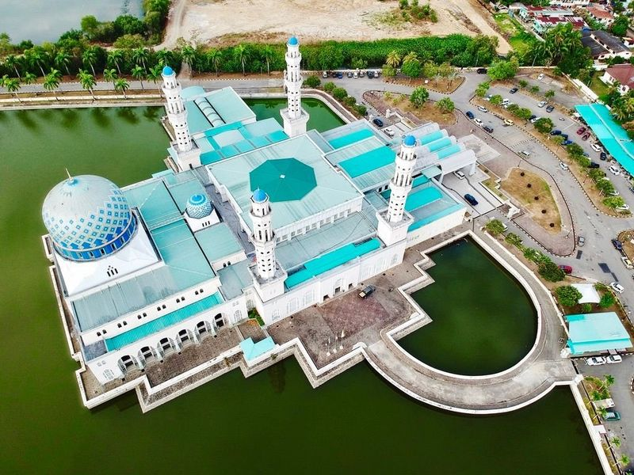
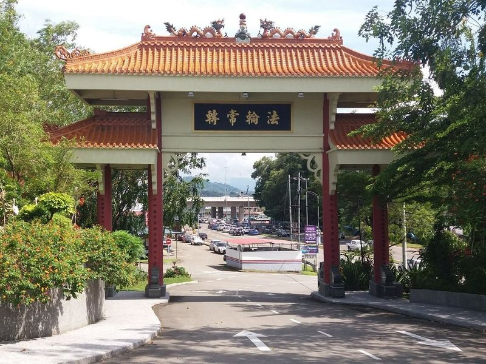
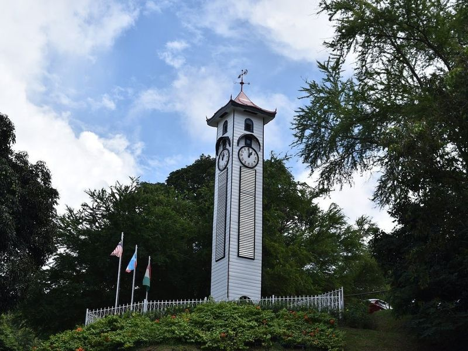
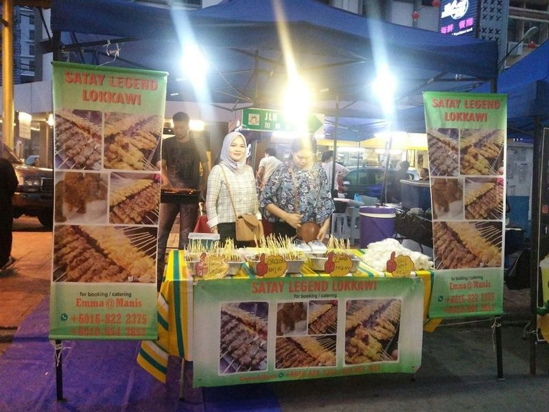
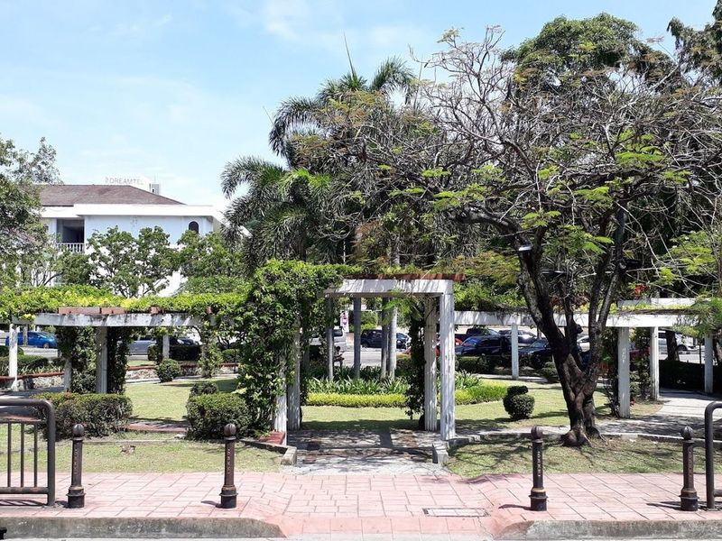
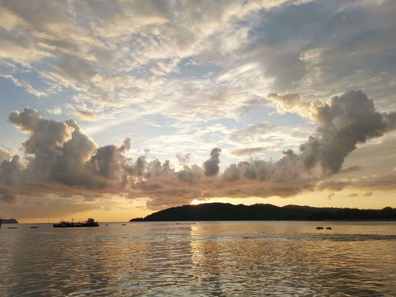
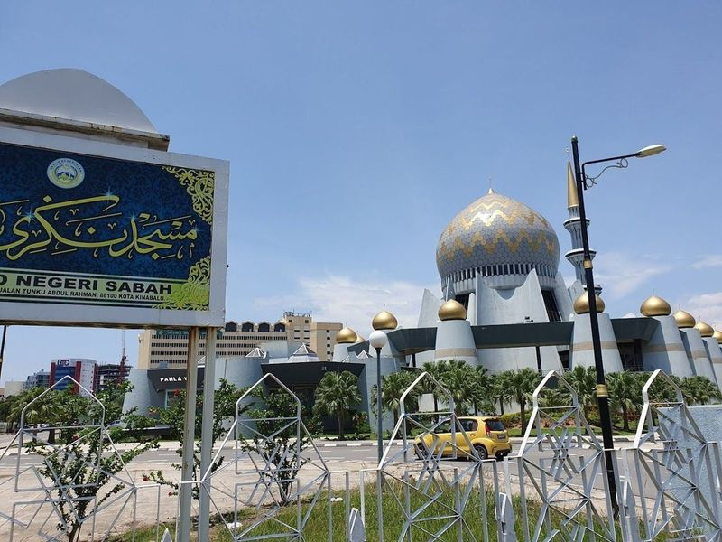
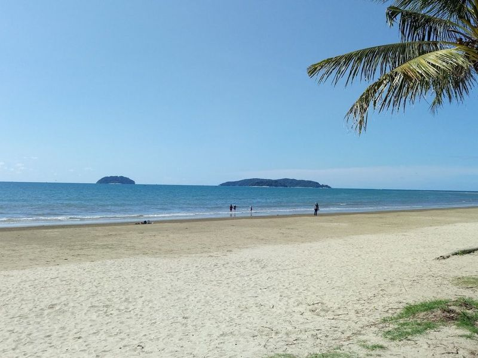
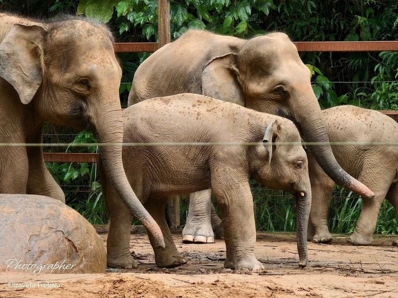
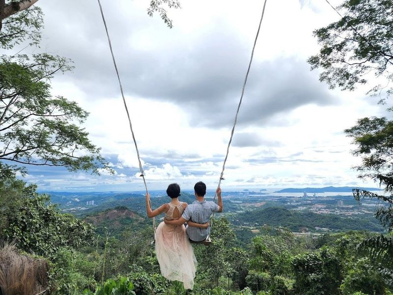

Explore Kota Kinabalu
A Brief History
Kota Kinabalu replaced Jesselton after World War II as capital of Sabah on Borneo's northwest coast. The name honours Mount Kinabalu, sacred to Kadazan-Dusun communities. Waterfront mosques, the Atkinson Clock Tower, and island ferries reflect British North Borneo administration, Malaysian federation since 1963, and trade across the South China Sea.
Attractions Map
Top Sights & Activities

Kota Kinabalu City Mosque
Masjid Bandaraya Kota Kinabalu is a grand mosque with a blue and gold dome, partially surrounded by a lagoon. It offers tours and is a highlight of city tours in Kota Kinabalu. The area also includes Signal Hill, State Government Building, Double Six Monument, Atkinson Tower, Jalan Gaya, and other attractions. Additionally, visitors can enjoy the tranquility of the sea and the liveliness of the city.

Puh Toh Si Chinese Temple
Puh Toh Si Chinese Temple, located in the heart of Kota Kinabalu, is a popular Buddhist temple known for its traditional carvings and sculptures depicting local deities. The temple features several small shrines where visitors can seek blessings and admire the intricate details on the walls. With a serene and well-maintained environment, it offers a peaceful retreat for soul-searching and contemplation.

Atkinson Clock Tower
Atkinson Clock Tower, also known as Menara Jam Atkinson, is a historic wooden clock tower in Kota Kinabalu, Sabah. Built in 1905 to commemorate Francis George Atkinson, a British colonial administrator who passed away at the age of 28 due to malaria, it stands at 15.7 meters tall and is one of the oldest structures in Sabah. The tower was funded by Atkinson's family and sailors' contributions.

Gaya Street Market
Gaya Street Sunday Market, formerly known as Bond Street, has become a vibrant and popular spot for locals and tourists. Every Sunday morning, the historical area turns into a bustling market offering a wide variety of goods such as arts and crafts, batik sarongs, fresh produce, local delicacies, antiques, souvenirs, pets and herbs. The market is filled with vendors selling everything from produce to cooked food to local crafts and souvenirs.

Kota Kinabalu City Park
Kota Kinabalu City Park is a must-visit destination in the city. The highlight of the park is the impressive Kota Kinabalu City Mosque, which stands on stilts above a lagoon, creating a visual effect. It has a capacity for 12,000 worshippers and is beautiful buildings in the area. Additionally, visitors can explore pleasant parks like Perdana Park and learn about the city's history at war memorials.

I Love KK
The Love KK sign located on the public waterfront area of Kota Kinabalu is a popular tourist attraction for tourists who have come to see and photograph the city. It is one of the icons of Kota Kinabalu and is close to open area seafood Market and restaurant.

Sabah State Mosque
The Sabah State Mosque, completed in 1975, is a grand symbol of Islamic architecture in the heart of Kota Kinabalu. With a capacity for 5,000 visitors, it stands as a testament to the Muslim faith in Sabah. Inspired by mosques like Al Aqsa and the Blue Mosque, its design includes a towering 215-foot minaret reminiscent of Mecca and Medina.

Tanjung Aru Beach
Tanjung Aru Beach is a must-visit destination in Kota Kinabalu, offering a picturesque setting with its long stretch of sandy shores and vibrant food stalls. It's renowned for being an ideal spot to witness sunsets. The beach provides a refreshing change of scenery, inviting visitors to swim in its crystal-clear waters and partake in various water sports and activities. Additionally, the area boasts numerous cafes and restaurants where savor delicious local cuisine.

Lok Kawi Wildlife Park
Lok Kawi Wildlife Park, situated near Kota Kinabalu, is a top destination for wildlife enthusiasts. The park, established in 2007 by the Sabah Wildlife Department, features a diverse range of Borneo's exotic animals such as tigers, bears, elephants, proboscis monkeys and more. Divided into botanical and zoological sections, it aims to be family-friendly with a focus on the Children's Zoo.

Kokol Hill Elf
Kokol Hill Elf is a popular destination near Kota Kinabalu, offering a serene escape just a half-hour drive from the city. Visitors can stay at the peaceful Kokol Heights Villa and enjoy cool breezes, with the chance to catch sight of Mount Kinabalu in the morning. The hill provides views of Mount Kinabalu and is an ideal spot for a romantic sunset experience. It's perfect for those seeking tranquility amidst nature away from the city's hustle and bustle.